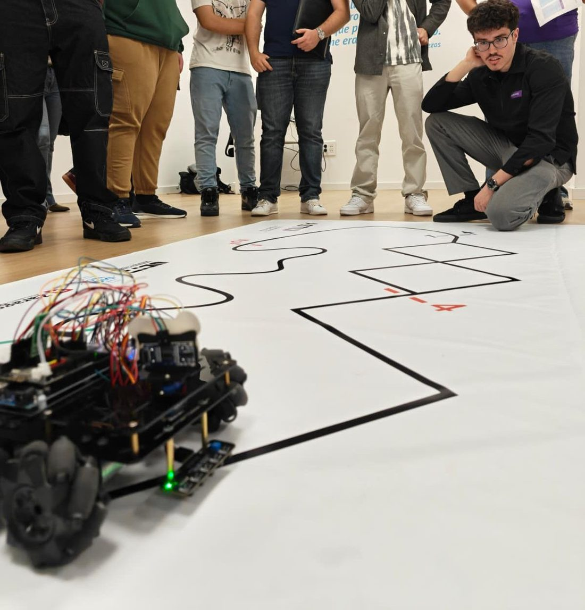
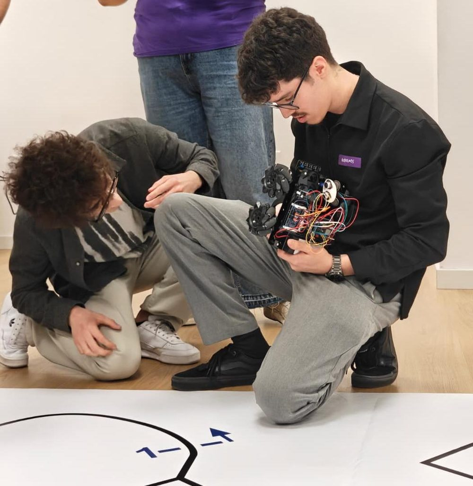
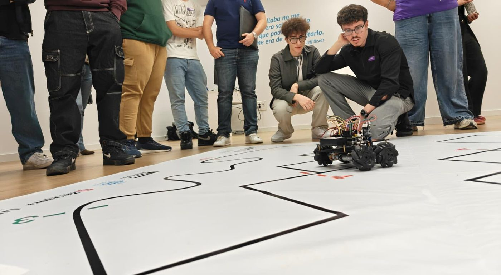
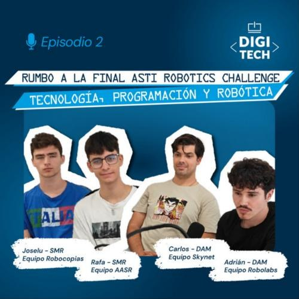

ASTI Robotics Challenge 2026 · Final in Burgos
The robot, event by event
I programmed a robot with mecanum wheels in Arduino to compete in the ASTI Robotics Challenge. Each event asked for something different, so I wrote a separate program for each one. Here I explain what each program does and why I solved it that way.


Adapting the code to the robot
A program that looks right on paper is useless if the robot doesn't respond as expected. This chassis has its limits, and a big part of the work was tuning the software to how the hardware actually behaves.
Mini sumo
Two robots in a ring. Whoever pushes the other out wins. The challenge isn't just pushing: the robot has to find the opponent, go for it and, above all, not drive out on its own.
On every pass of loop() the program decides what to do using a fixed order of priorities:
What it does at each moment
- Stay in the ringIf any of the 5 sensors sees the edge line, it brakes, backs up and turns inwards. This is checked before anything else.
- AttackIf the ultrasonic sensor sees the opponent in range, it drives towards it. When it gets close, it switches to charging speed.
- Blind chargeIf it has just seen the opponent and loses it, it keeps pushing for a few more cycles instead of starting to search.
- SearchIf it sees nothing, it spins on the spot until it finds the opponent.
Two versions
I tried two ways of finding the opponent. In the first, the sensor is fixed and the whole robot turns. In the second, the sensor sits on a servo that sweeps from side to side like a radar, and the robot remembers which side it saw the opponent on.
| Parameter | Fixed sensor (V4.0) | Servo radar |
|---|---|---|
| Detection distance | 45 cm | 30 cm |
| Charging distance | 20 cm | 40 cm |
| Search speed (0–255) | 100 | 120 · 90 while sweeping |
| Attack speed | 140 | 120 |
| Edge escape speed | 140 | 200 |
| Blind charge | 25 cycles | 40 head-on · 15 from the side |
| Escape manoeuvre | 350 ms back + 350 ms turn | 300 ms back + 400 ms turn |
| Servo sweep | — | 40° to 140°, in 10° steps |
Why I did it this way
- The edge comes firstLeaving the ring means losing the bout instantly, so reading the line sensors is the first thing in
loop(). However close the opponent is, if the robot touches the edge, it escapes. - Escape to the opposite sideIf the left sensors see the edge, it turns right, and vice versa. If only the centre one sees it, it turns for longer to spin almost all the way round.
- A pause before reversingIt stops for 40–50 ms before backing up. Going straight from forward to reverse is hard on the motors and gearbox.
- The blind chargeThe ultrasonic sensor has a blind spot: when the opponent is pressed right against the robot, it stops seeing it. Without this memory, the robot would start searching at the very moment it has the opponent in front of it, pushing.
- Low speeds in V4.0At higher speeds the robot loses traction and, on impact, momentum can carry it out of the ring itself. Turning more slowly while searching also means it doesn't skip past the opponent between one reading and the next.
- Breaking the search loopIf it spends 5 seconds spinning on the spot without seeing anything, it drives forward for half a second to change position. That way it doesn't keep spinning forever in a spot where it can't see the opponent.
- Timers with
millis()The search doesn't usedelay()to count those 5 seconds. If it did, the robot would be “asleep” and wouldn't read the edge in the meantime. - No echo doesn't mean 0 cmIf the ultrasonic sensor gets no echo, the function returns 999 instead of 0. If it returned 0, the robot would think the opponent was right against it and attack thin air.
- Only detect inside the ringIn the radar version I lowered the range to 30 cm so it wouldn't pick up objects outside the ring.
- Wait 5 seconds at the startThe ASTI rules require it, so the robot stays still when it starts.
Line follower
The robot has to complete a circuit following a black line as fast as possible without losing it on the curves.
The 5 sensors are combined into a single 5-bit number, one bit per sensor, from left to right. That way every situation is a number, and the program decides with a switch:

What it does depending on what it sees
Why I did it this way
- One number instead of lots of
ifsWith 5 sensors there are many combinations. Turning them into a 5-bit number puts each case on one line of theswitch, so you can see at a glance what the robot does in each situation. - No wheel stops on gentle curvesIf I fully stop the inner motor on a curve, the robot jerks and vibrates. Leaving it at 70 instead of 0, it turns smoothly and keeps its speed.
- Remembering the last sideOn a sharp curve, the line slips off one side before it disappears. If I store that side, when the robot sees nothing it knows which way to turn to find it again instead of guessing.
- Ignoring odd readingsCombinations that make no sense, like scattered sensors triggered by a reflection, fall into the
defaultcase and the robot carries on with what it was doing. That way a one-off bad reading doesn't make it swerve.
The robot has to draw shapes on paper to exact measurements: a square, a rectangle and a triangle.
The problem is that this robot has no encoders, so it can't tell how far each wheel has turned. The solution was to measure with time: I calibrated how long it takes to travel 1 cm and to turn 1 degree, and used that to write two functions that take centimetres and degrees.
Calibration
Travel 1 cm: 75 ms at speed 160.
Turn 1°: 6 ms at speed 130.
How a shape is drawn
Each shape is a list of straight sections and left turns, with a pause between each one. It all goes in setup() so the robot draws it only once.
The software was adapted to the robot
This event showed it more than any other. Mecanum wheels have rollers that slip slightly, the motors don't all respond the same way and there are no encoders to correct on the fly. If you ask the robot for 20 cm and 90°, you don't get 20 cm and 90°.
So the program had to be fitted to the robot, not the other way round: draw the shape, measure what it had actually done and correct the values until it came out right. That's why the numbers passed to avanzar() (move forward) and girarIzquierda() (turn left) aren't the measurements from the task. They're the ones that work with this robot. For example, to make it really turn 90°, the code asks for 72.
// 90° corner on the paper girarIzquierda(72); // value tuned by testing with the robot
// Moves the requested centimetres using the calibrated time
void avanzar(int centimetros) {
forward(MAX_SPEED, MAX_SPEED);
delay(centimetros * TIEMPO_1CM);
stop_bot();
}
Why I did it this way
- Functions in centimetres and degreesThat way each shape is written with distances and angles rather than loose milliseconds. If the battery or the surface changes, the robot behaves differently and the values need re-tuning.
- 400 ms pauses between sectionsWhen it brakes, the robot still drifts a little. Waiting for it to settle before the next move makes every section and every turn come out the same.
- Turning on the spotTo turn, the wheels on one side go forward and those on the other go backward. That way the robot turns without shifting and the corner stays in place.
- 3 seconds before startingThat's the time I have to set it down properly on the paper after switching it on.
WiFi control
Besides the events, the repository includes two examples from the manufacturer. With WiFi control the robot creates its own network and is driven from a phone app, which sends it one letter per button. This is where mecanum wheels shine: as well as moving forward and turning, the robot can move sideways and diagonally without turning its body.
These two programs are based on Osoyoo's tutorials for this chassis. In robot.ino I left my notes while studying it. The mini sumo, line follower and shapes programs are my own.
The podcast

Código Abierto · Digitech FP · Episode 2 · May 2026 · 34 min · In Spanish
Rumbo a la final: robótica y tecnología en ASTI Robotics Challenge
Before the final, my school's podcast brought together students from several Digitech teams to talk about how each project started, the technologies we used and what preparing for the competition was like. I took part for the Robolabs team.
Listen on Spotify